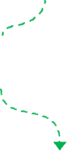
Leret untuk fakta yang menarik ini (dan bagaimana anda boleh
membantu).
Setiap 10 atau 20 sen daripada
perjalanan atau pesanan Grab
anda membiayai projek menjaga alam sekitar.
Inilah yang berlaku
apabila anda memilih Program Hijau kami:
Duit kecil anda boleh membawa perubahan yang besar kepada planet
kita.
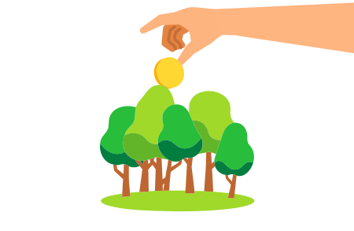
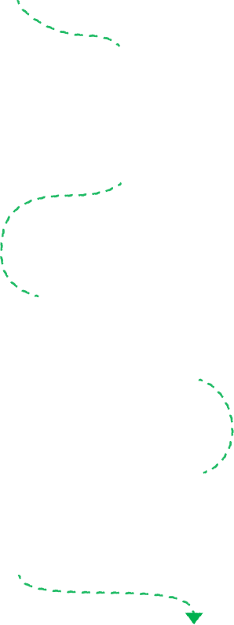
Mereka bagaikan keluarga! Kita memang tak serumah, tapi kita boleh
memelihara habitat mereka. Dengan menyokong
Projek Pemuliharaan Hutan Hujan Kuamut
di Sabah, anda sedang melindungi tempat tinggal mereka (dan
menangani perubahan iklim).
Dengan mempertahankannya, kita menyimpan
14 juta tan CO₂
untuk selama lebih 30 tahun,
melindungi 30+ spesies yang jarang ditemui dan terancam,
dan
memberikan pekerjaan kepada penduduk tempatan.
Hebat, kan?
Tahukah anda?
Orang utan berkongsi 97%
DNA kita
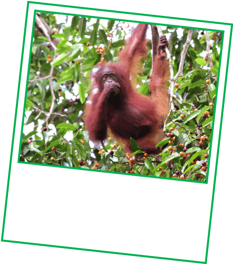
Hutan hujan juga melambatkan
kesan perubahan iklim dengan
menyerap dan menyimpan CO₂
(karbon dioksida).
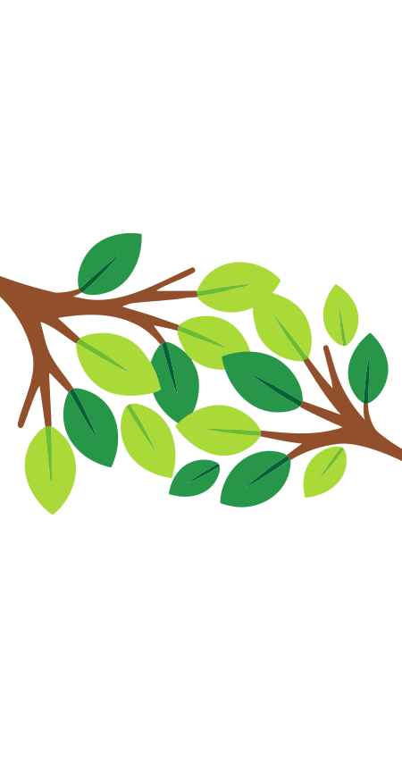
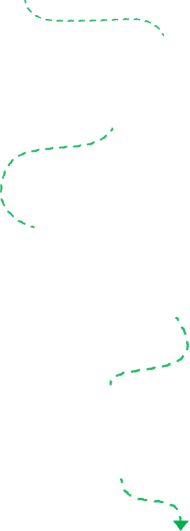
Dana anda juga membantu
Projek Pemuliharaan Hutan Paya Bakau Belawai WWF
di Sarawak. Hutan bakau melindungi pantai kita daripada terhakis,
dan menyimpan CO₂ untuk melawan perubahan iklim.
Dengan
memulihara hutan bakau,
dan
bekerjasama dengan penduduk tempatan
untuk menguruskan sumber yang ada, kami bukan sekadar memelihara
alam semula jadi (faham tak?) — malah kami turut menjana
pendapatan!
Tahukah anda?
Malaysia telah kehilangan banyak pantai sejak berdekad lamanya.
Hutan paya bakau boleh membantu.
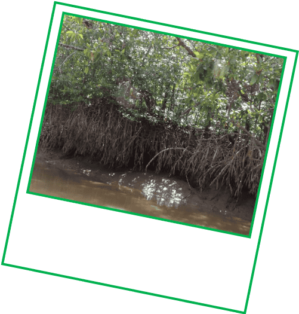
Hutan bakau Belawai turut
melindungi
ikan lumba-lumba
Irrawady yang diancam kepupusan.
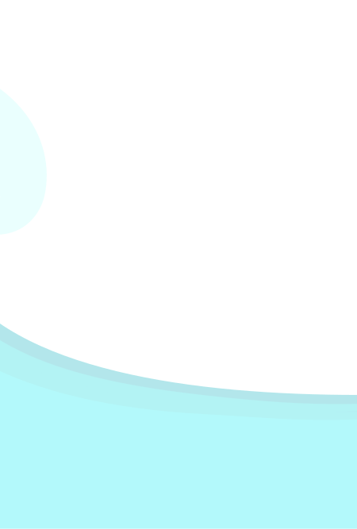
Dan bukan itu saja. Anda juga sedang membuat perubahan lebih kurang
1,900km jauhnya.
Program Hijau menyokong Persatuan Pemuliharaan Hidupan Liar dalam
memelihara
Perlindungan Hidupan Liar Keo Seima,
di Kemboja bagi melindungi lebih 80 spesies terancam dan habitat
mereka yang terjejas akibat penebangan hutan.
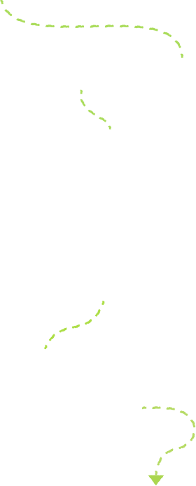
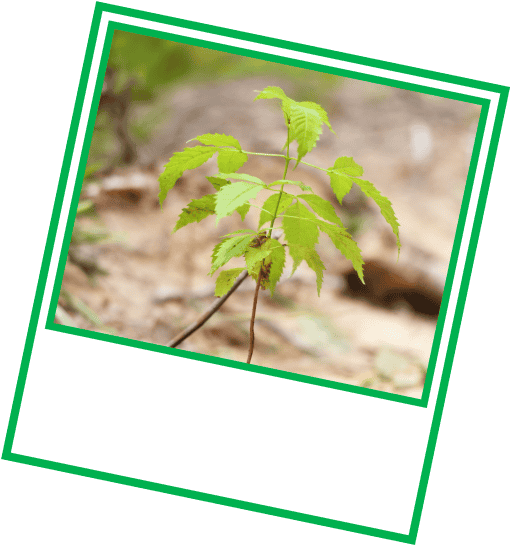
1.2 juta pohon
batang pokok
Boleh anda teka berapa banyak pokok yang telah disumbang setakat ini?
Lihat bagaimana sumbangan kecil boleh berubah menjadi besar. Klik
di sini untuk memilih
Program Hijau,
jika anda belum lagi.
Pop kuiz.
Sejak tahun 2021, pengguna Grab seperti anda telah berjaya
memulihara hutan di seluruh Asia Tenggara.
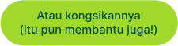
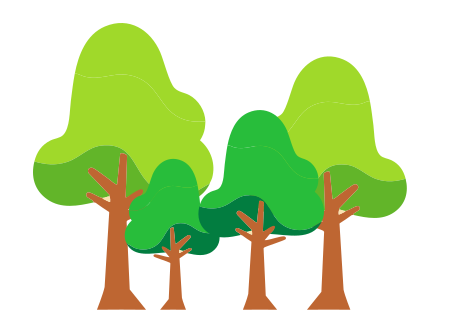
Source:
National Institutes of Health (NIH)
Department of Irrigation and Drainage Malaysia